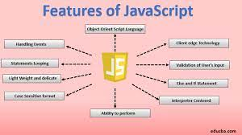
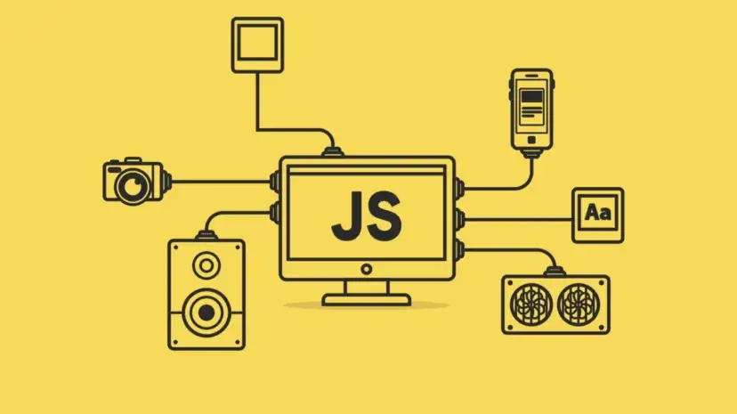

What Is HyperText Markup Language (HTML)?
HyperText Markup Language (HTML) is the set of markup symbols or codes inserted into a file intended for display on the Internet. The markup tells web browsers how to display a web page's words and images.
Each individual piece markup code (which would fall between "<" and ">" characters) is referred to as an element, though many people also refer to it as a tag. Some elements come in pairs that indicate when some display effect is to begin and when it is to end.
KEY TAKEAWAYS
HyperText Markup Language (HTML) is the basic scripting language used by web browsers to render pages on the world wide web.
HyperText allows a user to click a link and be redirected to a new page referenced by that link.
Early versions of HTML were static (Web 1.0), while newer iterations feature a great deal of dynamic flexibility
Markup is the text that appears between two pointed brackets (e.g., ), and content is everything else.
understanding HTML
HyperText Markup Language is the computer language that facilitates website creation. The language, which has code words and syntax just like any other language, is relatively easy to comprehend and, as time goes on, increasingly powerful in what it allows someone to create. HTML continues to evolve to meet the demands and requirements of the Internet under the guise of the World Wide Web Consortium, the organization that designs and maintains the language; for instance, with the transition to
HyperText is the method by which Internet users navigate the web. By clicking on special text called hyperlinks, users are brought to new pages. The use of hyper means it is not linear, so users can go anywhere on the Internet simply by clicking on the available links. Markup is what HTML tags do to the text inside of them; they mark it as a specific type of text. For example, markup text could come in the form of boldface or italicized type to draw specific attention to a word or phrase.
CSS: Cascading Style Sheets
Cascading Style Sheets (CSS) is a stylesheet language used to describe the presentation of a document written in HTML or XML (including XML dialects such as SVG, MathML or XHTML). CSS describes how elements should be rendered on screen, on paper, in speech, or on other media.
CSS is among the core languages of the open web and is standardized across Web browsers according to W3C specifications. Previously, the development of various parts of CSS specification was done synchronously, which allowed the versioning of the latest recommendations. You might have heard about CSS1, CSS2.1, or even CSS3. There will never be a CSS3 or a CSS4; rather, everything is now CSS without a version number.
After CSS 2.1, the scope of the specification increased significantly and the progress on different CSS modules started to differ so much, that it became more effective to develop and release recommendations separately per module. Instead of versioning the CSS specification, W3C now periodically takes a snapshot of the latest stable state of the CSS specification and individual modules progress. CSS modules now have version numbers, or levels, such as CSS Color Module Level 5.
CSS first step
CSS (Cascading Style Sheets) is used to style and layout web pages — for example, to alter the font, color, size, and spacing of your content, split it into multiple columns, or add animations and other decorative features. This module provides a gentle beginning to your path towards CSS mastery with the basics of how it works, what the syntax looks like, and how you can start using it to add styling to HTML.
CSS styling text
With the basics of the CSS language covered, the next CSS topic for you to concentrate on is styling text — one of the most common things you'll do with CSS. Here we look at text styling fundamentals, including setting font, boldness, italics, line and letter spacing, drop shadows, and other text features. We round off the module by looking at applying custom fonts to your page, and styling lists and links.
CSS layout
At this point we've already looked at CSS fundamentals, how to style text, and how to style and manipulate the boxes that your content sits inside. Now it's time to look at how to place your boxes in the right place in relation to the viewport, and to each other. We have covered the necessary prerequisites so we can now dive deep into CSS layout, looking at different display settings, modern layout tools like flexbox, CSS grid, and positioning, and some of the legacy techniques you might still want to know about.
Use CSS to solve common problems
This module provides links to sections of content explaining how to use CSS to solve common problems when creating a web page.
javaScript
What is JavaScript?
JavaScript is a cross-platform, object-oriented scripting language used to make webpages interactive (e.g., having complex animations, clickable buttons, popup menus, etc.). There are also more advanced server side versions of JavaScript such as Node.js, which allow you to add more functionality to a website than downloading files (such as realtime collaboration between multiple computers). Inside a host environment (for example, a web browser), JavaScript can be connected to the objects of its environment to provide programmatic control over them.
avaScript contains a standard library of objects, such as Array, Date, and Math, and a core set of language elements such as operators, control structures, and statements. Core JavaScript can be extended for a variety of purposes by supplementing it with additional objects; for example:
Client-side JavaScript extends the core language by supplying objects to control a browser and its Document Object Model (DOM). For example, client-side extensions allow an application to place elements on an HTML form and respond to user events such as mouse clicks, form input, and page navigation.
Server-side JavaScript extends the core language by supplying objects relevant to running JavaScript on a server. For example, server-side extensions allow an application to communicate with a database, provide continuity of information from one invocation to another of the application, or perform file manipulations on a server.

